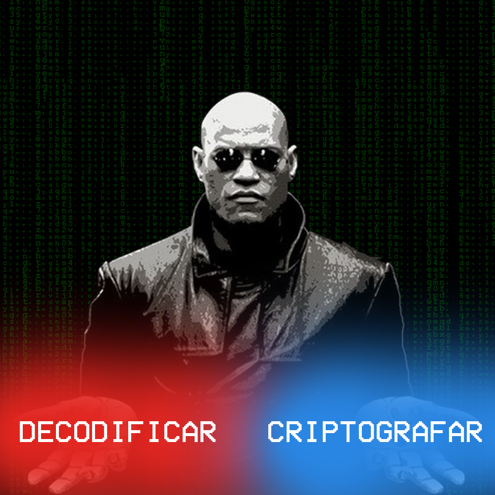
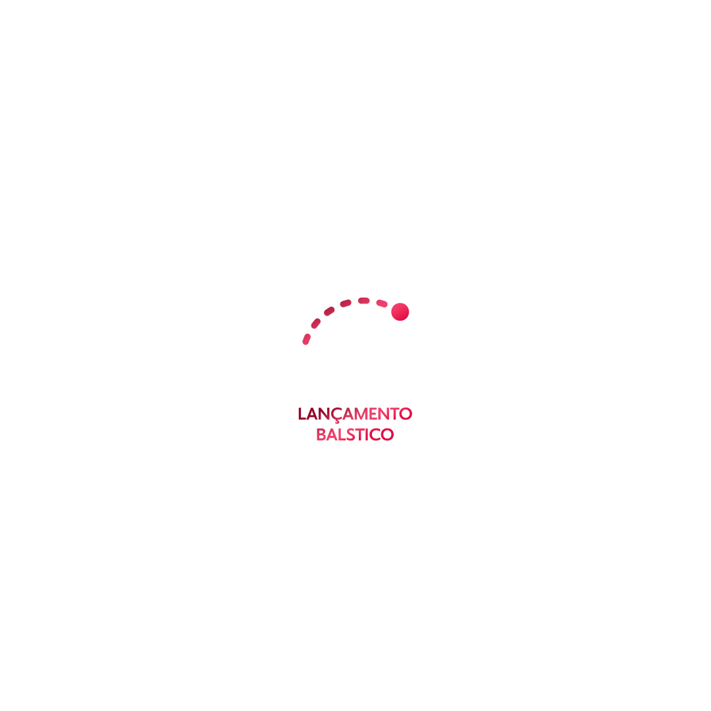
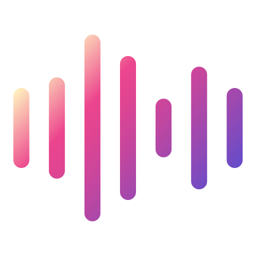

Projeto 01 · C# WinForms
Criptografia por Matrizes
Aplicacao desktop para codificar e decodificar mensagens por transformacoes matriciais, com fluxo guiado e telas de apoio.
nicolasbirochi.com.br
Desenvolvimento de aplicacoes desktop, simuladores academicos, sistemas web em Java e experiencias digitais com atencao a seguranca, usabilidade e apresentacao.
perfil tecnico
O portfolio foi estruturado para mostrar evolucao tecnica: interfaces desktop em C#, modelagem fisica, integracao com banco de dados e um e-commerce Spring MVC com autenticacao, carrinho, pedidos e upload de imagens.
projetos selecionados

Projeto 01 · C# WinForms
Aplicacao desktop para codificar e decodificar mensagens por transformacoes matriciais, com fluxo guiado e telas de apoio.

Projeto 02 · Fisica aplicada
Simulador academico em C# para apoio a calculos de fisica, sistemas lineares e lancamento balistico, acompanhado por relatorio e video.

Projeto 03 · JavaFX e SQL Server
Experimento visual para simular fonte sonora, observador, ambiente e timbres, com persistencia em banco e procedures.
Projeto 04 · Spring MVC
Aplicacao web com catalogo, carrinho em cookie, pedidos, autenticacao por sessao, perfis de acesso e CRUD administrativo.
seguranca aplicada
Arquitetura estatica, sem coleta de dados, sem login, sem banco, sem upload e sem dependencias externas. A politica CSP bloqueia scripts externos e frames.
contato